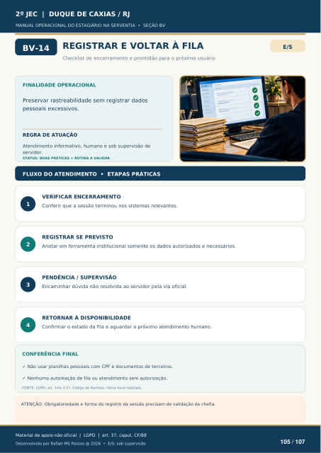

Texto da camada original do PDF
REGISTRAR E VOLTAR À FILA
Checklist de encerramento e prontidão para o próximo usuário
FINALIDADE OPERACIONAL
Preservar rastreabilidade sem registrar dados pessoais excessivos.
REGRA DE ATUAÇÃO
Atendimento informativo, humano e sob supervisão de servidor.
STATUS: BOAS PRÁTICAS + ROTINA A VALIDAR
FLUXO DO ATENDIMENTO • ETAPAS PRÁTICAS
1
VERIFICAR ENCERRAMENTO
Conferir que a sessão terminou nos sistemas relevantes.
2
REGISTRAR SE PREVISTO
Anotar em ferramenta institucional somente os dados autorizados e necessários.
3
PENDÊNCIA / SUPERVISÃO
Encaminhar dúvida não resolvida ao servidor pela via oficial.
4
RETORNAR À DISPONIBILIDADE
Confirmar o estado da fila e aguardar o próximo atendimento humano.
CONFERÊNCIA FINAL
Não usar planilhas pessoais com CPF e documentos de terceiros.
Nenhuma automação de fila ou atendimento sem autorização.
FONTE: LGPD; art. 144, § 2º, Código de Normas; rotina local relatada.
ATENÇÃO: Obrigatoriedade e forma do registro da sessão precisam de validação da chefia.
Ver também o infográfico original (página 105)
